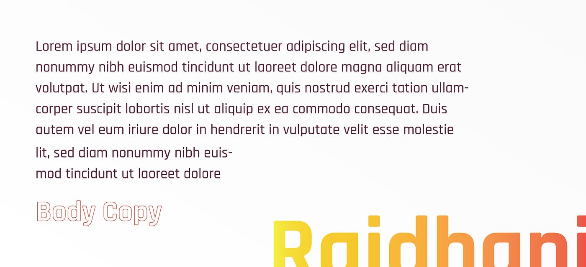
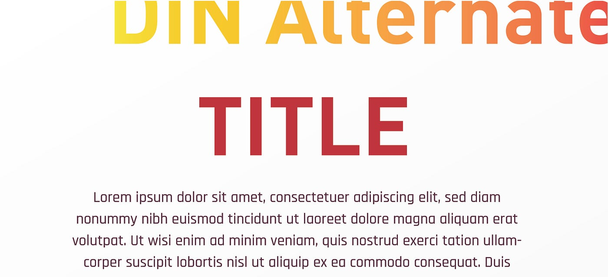

Following the success of the inaugural Model United Nations at NIT Rourkela, the institute looked to establish the conference on a global scale. For the second edition, we set out to build a professional identity system.
Being a formal event, the designs had to maintain a polished look while projecting a youthful, modern spirit. We chose a system incorporating smooth vector gradients, digital maps, and structured flags.
Typography
We chose "Rajdhani" as the main typeface. It features geometric, structured letters that project diplomacy and global politics in a fresh, youthful manner.

